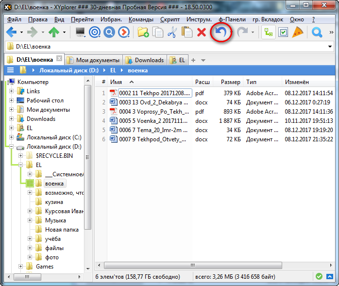
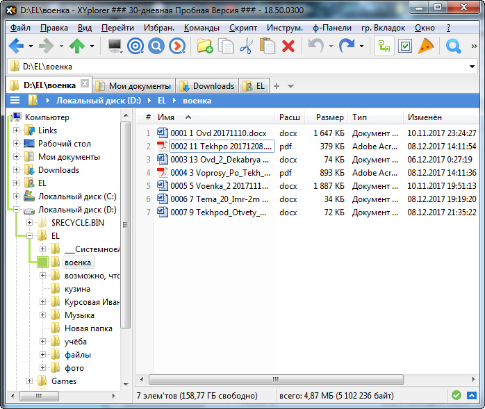

XYplorer - файловый менеджер для Windows.
XYplorer является, своего рода, гибридным программным продуктом, который сочетает возможности навигационного (пространственного) и классического двухпанельного файлового менеджера.
Программа обладает простым и весьма гибким в настройке интерфейсом на базе двух панелей с поддержкой вкладок, что позволяет более продуктивно работать и управлять файлами и папками на компьютере, нежели с помощью штатного проводника Windows.
Хотелось бы отметить, что утилита платная, но предоставляется 30 дневная пробная версия.
Главное окно программы значительно отличается от ранее представленных мною утилит. Довольно яркие, крупные и понятливые значки операций головного меню. Панель навигации по папкам единичный. Сбоку находится дерево папок. Всё представлено в скриншоте ниже:
Сразу хочу отметить весьма полезную и "спасательную" операцию - отмену последних действий. Продемонстрирую ее возможность при ошибочном удалении файла.
Удаляем первый файл в данной папке:
Нажимаем на значок отмены действия и видим радующий результат, удаленный файл восстановлен:


Здесь так же можно сделать две панели навигации, что весьма удобно при копировании и перемещении файлов.
Можно настроить визуальные фильтры. Или отобразить выбор флажком и размеры папок.
Дополнительные возможности XYplorer:
На официальном сайте разработчиков можете рассмотреть подробное описание возможностей XYplorer: https://www.xyplorer.com